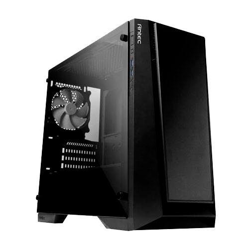
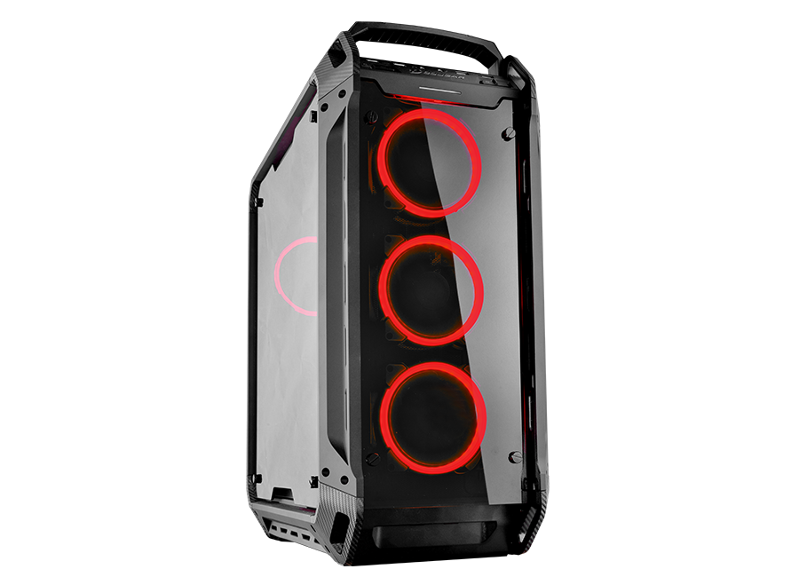
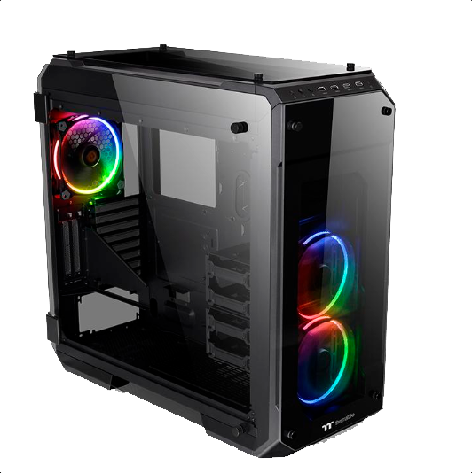

Build gama de entrada

Build gama media 
Ordenador de sobremesa dirigido para gente iniciada en el mundo del gaming y personas que necesitan hardware para renderizado de videos y
gráficos.
Build gama alta 
Ordenador de sobremesa perfecto para amantes del modding y de lo último en tecnología punta.